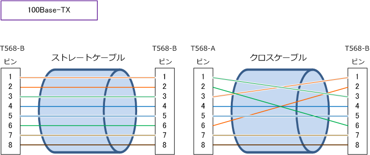
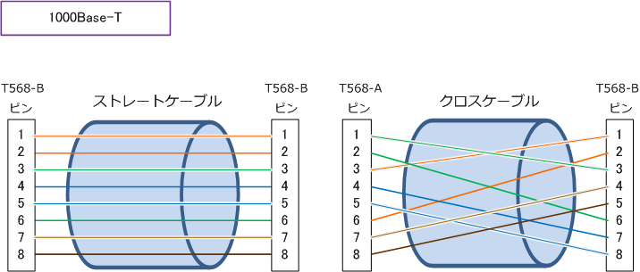
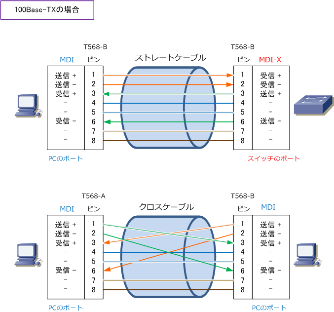
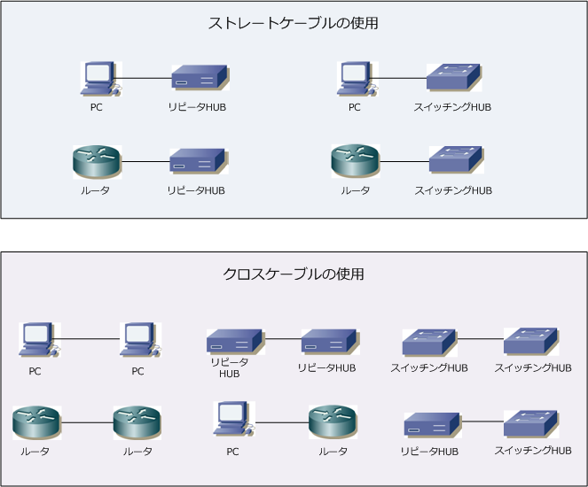
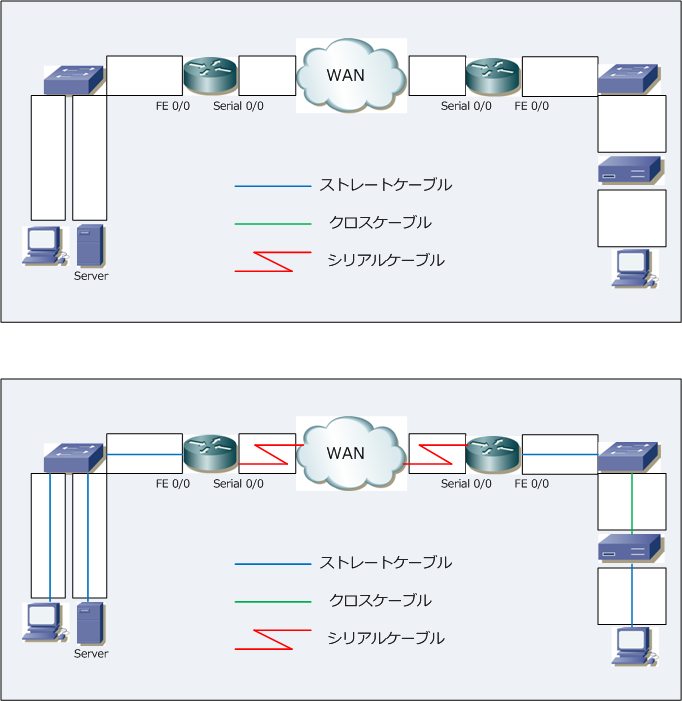

Ethernet LAN - Straight Cable / Cross Cable
UTPケーブルの種類 - ストレートケーブルとクロスケーブル
UTPケーブルには、ストレートケーブルとクロスケーブルの2種類があります。外観は似ていますが ストレートケーブルはケーブル内の銅線が途中で交差せずケーブル両端で同じピン配列になっており、 クロスケーブルはケーブル内の銅線が途中で交差しておりケーブル両端で異なるピン配列となります。 従って、LANケーブルのRJ45コネクタの先端をみれば、ストレートかクロスケーブルか判別できます。

100Base-TXと1000Base-Tとでは、ストレートは同じですが、クロスケーブルのピン配列は異なります。

LAN接続で、ストレートケーブルまたはクロスケーブルのどちらを使用するかは、ケーブルを接続する 機器の組み合わせで決まります。例えば、PCとスイッチとを接続する場合はストレートケーブルを使用し PCとPCを接続する場合はクロスケーブルを使用します。なぜ、ストレート(クロス) なのかを説明します。
Ethernet機器のポート2つのタイプがあります。MDI (Medium Dependent Interface) とMDI-Xです。 MDIは送信用にピン「 1, 2 」、受信用にピン「 3, 6 」を割り当てられたポート。PC、ルータ等が該当。 MDI-Xは送信用にピン「 3, 6 」、受信用にピン「 1, 2 」を割り当てられたポート。スイッチ等が該当。 ネットワーク通信を行うためには、送信用ピンで送信した信号が、接続先の受信用ピンで受信する必要が あり、MDIとMDI-Xの接続はストレート、MDI同士、MDI-X同士の接続はクロスケーブルを使用します。

最近は、接続先のポートタイプ (MDI or MDI-X) を自動判別し、ストレート、クロスケーブルに関係なく 相互接続できるようにする AutoMDI/MDI-X機能 をサポートするスイッチなどが非常に増えてきています。
ストレートケーブルとクロスケーブルの接続例
上述での解説どおり、ポートタイプが「 MDI 」であるデバイスは「 PC、ルータ 」などが該当します。 また、ポートタイプが 「 MDI-X 」 であるデバイスは「スイッチ、リピータハブ、ONU」などが該当。 そして、MDI と MDI-X のデバイス間の接続はストレートケーブルが使用され、MDI同士またはMDI-X 同士のデバイス間の接続はクロスケーブルが使用されます。以下は、それぞれのケーブルの接続例です。

下図で、ストレートケーブル、クロスケーブル、Serialケーブルがどこで使用されるのかを考えてみます。
